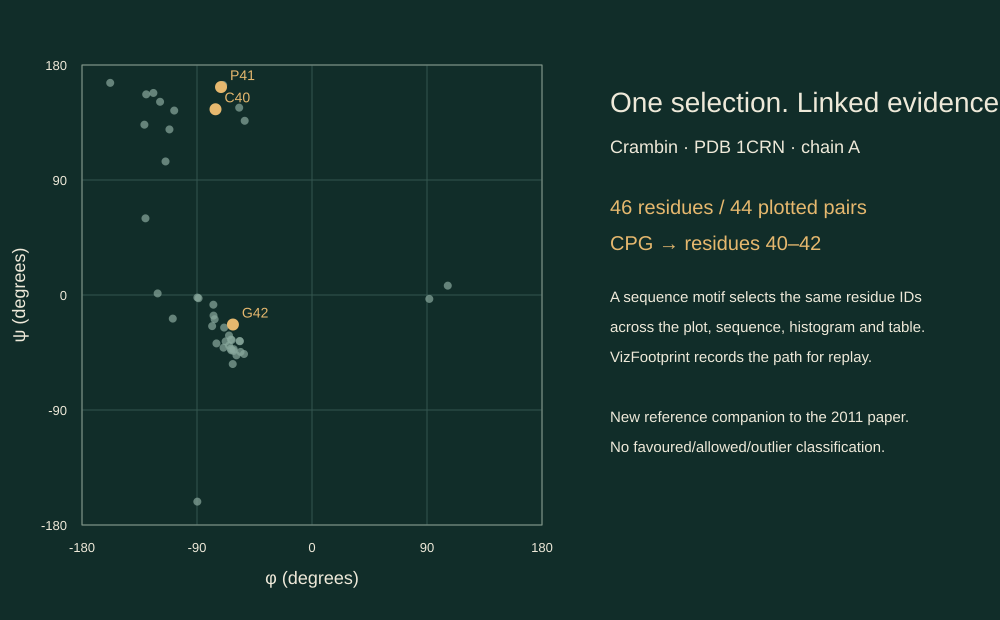

Research / Information Visualisation 2011
Interactive Ramachandran PlotLinked protein exploration in Weave
2011 15th International Conference on Information Visualisation · pp. 232–236 · IEEE
Original abstract
Published in 2011. The statements below describe the software landscape at that time.
Current software systems having Ramachandran Plots do not support interactivity with the visualization. Current web-based Ramachandran Plot tools provide only primitive analysis and simple report generation features. In Weave (Web-based Analysis and Visualization Environment), we have developed an improved Ramachandran Plot with interactivity that facilitates better analysis, sequence searching features and supplementary visualizations. Weave provides essential features facilitating broader amino acid analysis, statistical computations and the advantages of a more general web-based application.
Keep the views connected
A residue is more useful to explore when its position in the angle plot stays connected to its place in the protein sequence and the surrounding data.
- The original Weave work linked the Ramachandran plot with subsets, tables, supplementary visualizations and motif searches.
- This modern companion recreates those core interactions for one verified protein example.
- VizFootprint adds a recorded exploration trail: revisit a selection, keep alternative paths, compare their residue sets, and replay a saved session.

Explore the protein
Open the linked views to brush the angle plot, choose a residue, or search a sequence motif. Every view follows the same selection.
This companion uses real crambin data and runs locally in your browser with VizFootprint. A saved session includes the pinned data and exploration trail. The companion is a new implementation, separate from the 2011 Weave software.
Open the linked exploration
Explore the angle plot, protein sequence, amino-acid composition and residue table together. Search PG, CPG or overlapping II motifs, then revisit or save your exploration path.
Crambin · 46 residues · 44 complete angle pairs. The demo runs locally in your browser.
Data, checks & scope
The example is crambin, RCSB PDB 1CRN, entry version 1.5. The coordinate file was retrieved on 27 October 2026. Backbone torsions are calculated from atom coordinates, with residue identities and missing values retained.
All 90 defined angles were cross-checked against Biopython 1.86. The maximum circular difference was 0.0001492°, within the 0.001° comparison tolerance. The protein contains 46 residues and 44 complete φ/ψ pairs.
This is an exploratory visualization companion. It supplies no favoured/allowed/outlier classifications or empirical validation contours. The first release covers the pinned 1CRN example, linked selection, literal motif search and replay. General protein-file import, the original R editor and a linked 3D viewer are outside this release.
Coordinate SHA-256: 42199a30a0701864a2a5cc76cd7f35cc544cd0e65fbcf63e03c166543249b811
Runtime: VizFootprint 0.1.0 · FootPrint 10.0.0 · foottrace 1.0.3. The saved view definition pins the library source and data versions.
The plot figure and interactive companion on this page were newly produced from the attributed PDB data. The original paper credits Purushe, Anbalagan and Grinstein, and lists a linked 3D viewer as future work.
Historical Weave source · 2017 archive
The 30 June 2017 archived Weave snapshot includes the Ramachandran plot tool, background renderer and PDB service client. The source shows that implementation’s scatterplot, histogram and sequence selections, with an embedded image supplying the plot background.
Cite the paper
Use the original conference paper citation when discussing the 2011 Weave work. For this companion, also identify the data and software versions supplied with your saved session.
@inproceedings{purushe2011ramachandran,
author = {Purushe, Shweta and Anbalagan, Sanjay Krishna and Grinstein, Georges},
title = {Development of an Interactive {Ramachandran} Plot in {Weave}},
booktitle = {2011 15th International Conference on Information Visualisation},
year = {2011},
pages = {232--236},
publisher = {IEEE},
doi = {10.1109/IV.2011.109},
url = {https://doi.org/10.1109/IV.2011.109}
}